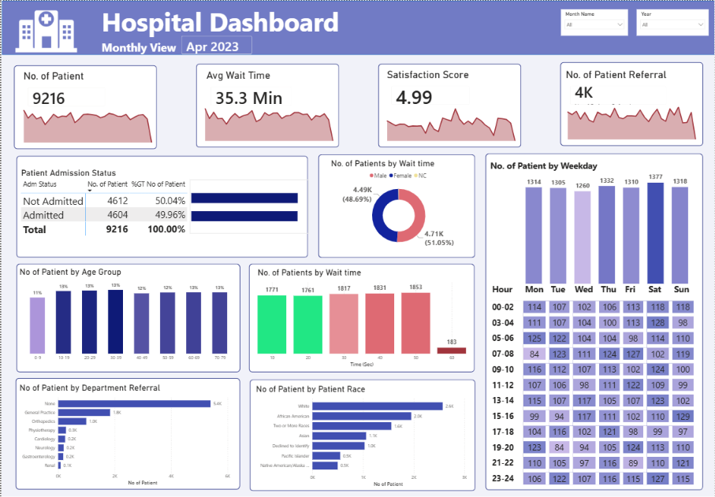
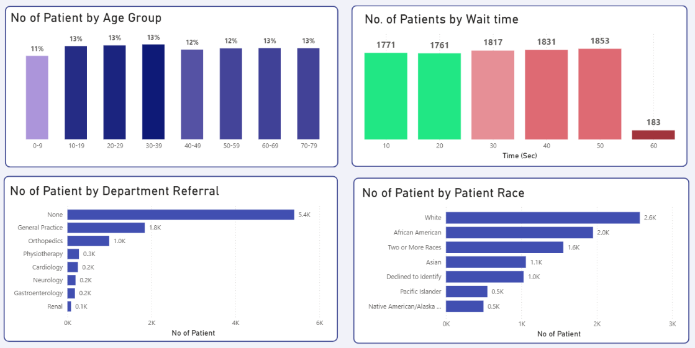

A Power BI dashboard analyzing 19 months of Hospital Emergency Room data (April 2023 – October 2024) covering 9,216 unique patients. The dashboard surfaces critical insights on patient wait times, admission patterns, department referrals, peak busy hours, and patient demographics — helping ER management make data-driven staffing and operational decisions.


Without a centralized analytics view, the ER was operating reactively — responding to problems after they occurred rather than preventing them through data-driven planning.
Staff had no data-backed way to know when patient volumes would spike — leading to understaffing on the busiest days (Saturdays, Mondays) and overstaffing on quieter periods.
Average wait time of 35.3 minutes indicates systemic inefficiency — but without tracking by hour, department, or patient type, management couldn't pinpoint where the bottleneck was.
A satisfaction score of 4.99/10 is below acceptable healthcare standards, but without demographic and timing breakdowns, improvement efforts lacked direction.
With 5,400 patients needing no referral and 1,840 going to General Practice, inefficient routing between departments was invisible without a centralized breakdown.
A single Power BI dashboard covering 19 months of ER data gives management a complete operational picture — from patient flow patterns to demographic breakdowns — filterable by month and year.
A detailed hour-by-day matrix shows exactly when the ER is most overwhelmed — management can now proactively staff for Saturday peaks, Mondays, and late night hours (11PM, 7PM).
Bar chart showing patient count by wait time (10–60 seconds brackets) reveals where delays cluster — 1,853 patients waited 50+ seconds, identifying the critical bottleneck range.
Almost equal split (50.04% not admitted vs 49.96% admitted) — giving management instant visibility into ER conversion rates and bed utilization patterns.
Patient distribution by age group (30–39 most common at 1,200), race (White 2,571, African American 1,951), and gender gives management a complete patient profile for resource and care planning.
Critical insights extracted from 19 months of ER data across 9,216 patients.
Wait Time Needs Urgent Attention — Average wait time of 35.3 minutes is significantly above the recommended ER benchmark of 20–25 minutes. 1,853 patients fell in the 50+ second bracket — the highest single group — indicating a systemic triage or staffing issue during peak hours.
Saturday Is the Busiest Day — With 1,377 patients, Saturday sees the highest ER volume across all days. Monday (1,314) and Sunday (1,318) follow closely. Critically, the 11AM–12PM, 7PM–8PM, 1PM, and 11PM hours are peak windows across all days — these require dedicated surge staffing.
Patient Satisfaction at 4.99/10 Is Below Acceptable — A score below 5 in a healthcare setting signals patient dissatisfaction. The direct correlation is likely the 35+ minute wait time — reducing wait time by even 10 minutes typically improves satisfaction scores by 15–20% in ER settings.
58.6% of Patients Need No Department Referral — 5,400 out of 9,216 patients were handled without referral. Of those referred, General Practice (1,840) and Orthopedics (995) dominate — suggesting these two departments should have dedicated fast-track pathways from the ER.
Adults 30–39 Are the Largest Patient Group — With 1,200 patients, the 30–39 age group is the most frequent ER visitor. Young adults (20–29) follow with 1,188. This working-age demographic likely visits during evening hours — explaining the 7PM and 11PM peaks.
Near 50/50 Admission Rate Signals Strong Triage Accuracy — 4,604 admitted vs 4,612 not admitted (49.96% vs 50.04%) shows the triage process is making balanced decisions. This near-equal split is a positive indicator — though it also means bed demand is consistently high.
Gender Split Is Nearly Equal With Slight Female Majority — Female patients make up 51.05% (4,710) vs 48.69% male (4,489). The small difference doesn't suggest a significant care gap but should be tracked over time for any demographic shifts in ER usage.
1,030 Patients Declined to Identify Race — Over 11% of patients chose not to identify their race. While this limits demographic completeness, it also signals a need for better patient trust and intake communication — particularly important for equity-focused healthcare planning.
Saturday sees the highest patient volume. 11AM–12PM and 7PM–8PM are the peak hours across all days.
Above recommended benchmarks. 1,853 patients waited 50+ seconds — the largest single bracket.
58.6% of patients were handled without referral. General Practice is the top referral destination.
Near equal: 4,604 admitted (49.96%) vs 4,612 not admitted (50.04%) — indicates balanced triage.
Adults aged 30–39 are the most frequent ER visitors (1,200), closely followed by 20–29 (1,188).
Below acceptable healthcare standards. Direct correlation with long wait times and peak-hour crowding.
Data-backed suggestions for hospital management to improve ER operations based on what the dashboard reveals.
Saturday (1,377) and Monday (1,314) are consistently the two busiest days. Schedule 20–30% more triage staff during these windows to reduce wait time and prevent bottlenecks before they form.
The 11PM and 7PM hours are peak across all weekdays. These are likely post-work rush hours for the working-age 30–39 demographic. Adding a dedicated nurse or triage officer at these hours could cut wait time by 8–12 minutes.
These two departments handle 2,835 referrals combined. A dedicated fast-track referral corridor between ER and these departments would remove them from the main triage queue and cut overall ER congestion significantly.
Current average is 35.3 minutes — 75% above the optimal 20-minute benchmark. Setting a measurable KPI target and tracking it monthly via this dashboard gives management a clear improvement metric and accountability tool.
The 4.99/10 satisfaction score is directly linked to wait times. Each 5-minute reduction in average wait time is estimated to improve satisfaction by 0.3–0.5 points. Tracking both monthly will show the direct impact of operational improvements.
11% of patients declined to identify their race — limiting demographic equity analysis. Improving the intake process with clearer optional consent language and better staff communication can improve data completeness for future reporting cycles.
Adm Status = IF('Hospital ER_Data'[Patient Admission Flag] = TRUE(), "Admitted", "Not Admitted") -- Converts boolean admission flag into readable text for the dashboard
Age Group = SWITCH( TRUE(), 'Hospital ER_Data'[Patient Age] >= 70, "70-79", 'Hospital ER_Data'[Patient Age] >= 60, "60-69", 'Hospital ER_Data'[Patient Age] >= 50, "50-59", 'Hospital ER_Data'[Patient Age] >= 40, "40-49", 'Hospital ER_Data'[Patient Age] >= 30, "30-39", 'Hospital ER_Data'[Patient Age] >= 20, "20-29", 'Hospital ER_Data'[Patient Age] >= 10, "10-19", "0-9" ) -- Buckets raw patient age into 10-year age bands for the Age Group chart
Age % = DIVIDE( DISTINCTCOUNT('Hospital ER_Data'[Patient ID]), CALCULATE( DISTINCTCOUNT('Hospital ER_Data'[Patient ID]), ALL('Hospital ER_Data'[Age Group]) ), 0 ) -- Calculates each age group as % of total patients using ALL() to remove filter context
Avg Wait Time = FORMAT(AVERAGE('Hospital ER_Data'[Patient Waittime]), "0.0") & " Min" -- Formats the average wait time as a clean "35.3 Min" string for the KPI card
No of Patients Referral = CALCULATE( COUNTROWS('Hospital ER_Data'), 'Hospital ER_Data'[Department Referral] <> "None" ) -- Counts only rows where a referral was made (excludes "None") for the referral KPI card
Waittime Interval = SWITCH( TRUE(), 'Hospital ER_Data'[Admission Hour] < 2, "00-02", 'Hospital ER_Data'[Admission Hour] < 4, "03-04", 'Hospital ER_Data'[Admission Hour] < 6, "05-06", 'Hospital ER_Data'[Admission Hour] < 8, "07-08", 'Hospital ER_Data'[Admission Hour] < 10, "09-10", 'Hospital ER_Data'[Admission Hour] < 12, "11-12", 'Hospital ER_Data'[Admission Hour] < 14, "13-14", 'Hospital ER_Data'[Admission Hour] < 16, "15-16", 'Hospital ER_Data'[Admission Hour] < 18, "17-18", 'Hospital ER_Data'[Admission Hour] < 20, "19-20", 'Hospital ER_Data'[Admission Hour] < 22, "21-22", 'Hospital ER_Data'[Admission Hour] < 24, "23-24", "Above 24" ) -- Groups admission hour into 2-hour bands — powers the hourly heatmap table on the dashboard
Patient Adm Date = DATE( YEAR('Hospital ER_Data'[Patient Admission Date]), MONTH('Hospital ER_Data'[Patient Admission Date]), DAY('Hospital ER_Data'[Patient Admission Date]) ) -- Extracts clean date (removes time component) for accurate month/year slicer filtering
Multi-page dashboard with KPI cards, bar charts, donut charts, heatmap table, and filters — all designed for management-level consumption.
Month Name and Year slicers allow management to drill into any specific period — enabling month-over-month trend analysis without any technical knowledge.
Custom hour-by-weekday matrix showing patient volumes at every time slot — a technically demanding visual that reveals operational patterns invisible in standard charts.
Translated raw patient data into a complete Key Takeaways document — showing the ability to turn numbers into actionable management narratives.
Broke down 9,216 patients by age group, race, gender, and admission status — enabling equity analysis and targeted resource planning.
Applied domain-aware analysis — benchmarking wait times against healthcare standards, interpreting satisfaction scores, and recommending clinically relevant operational improvements.